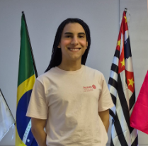

História do Rotaract Brasil
O Rotaract surgiu nos Estados Unidos em 1968, como um programa de Rotary International para jovens de 18 a 30 anos. No Brasil, o primeiro clube foi fundado em 1970, em São Paulo. Desde então, o movimento cresceu exponencialmente, espalhando-se por todas as regiões do país.
O Rotaract Club de Mauá 8 de Dezembro foi fundado em 8 de dezembro de 1982, tornando-se um dos clubes mais antigos e tradicionais da região do ABC Paulista. Ao longo de mais de quatro décadas, o clube tem desempenhado um papel fundamental na promoção do desenvolvimento juvenil e na realização de projetos sociais que impactam positivamente a comunidade de Mauá.
Nossa Trajetória
1982
Fundação — Em 8 de dezembro, é fundado o Rotaract Club de Mauá 8 de Dezembro, com o apoio do Rotary Club de Mauá.
1990
Primeiro Grande Projeto — Realização da primeira campanha do agasalho, que se tornou tradição anual.
2000
Expansão — O clube amplia suas ações, passando a atuar em parceria com outras entidades da cidade.
2010
Reconhecimento — O clube recebe prêmios e menções honrosas por seus projetos sociais inovadores.
2022
40 Anos — Celebração das quatro décadas de serviços prestados à comunidade de Mauá.
Galerinha do Conselho 2026-27
Conheça o time que está à frente do clube no ano rotário 2026-27, liderando com dedicação e paixão pelo serviço.
Victoria Eugênio
Presidente Diretora de Oratória
2026-27

Pedro Vasconcelos
Vice-Presidente Imagem Pública & Protocolo
2026-27
André Girialdeli
Secretário DEI
2026-27
Wendell Almeida
DQA Desenv. Quadro Associativo
2026-27
Anna Beatriz
Tesoureira
2026-27
Rafaella Bonardi
Comissão de Projetos
2026-27
Malu Zenke
Fundação Rotária
2026-27
Jovens unidos pelo serviço, liderando com propósito e transformando Mauá.